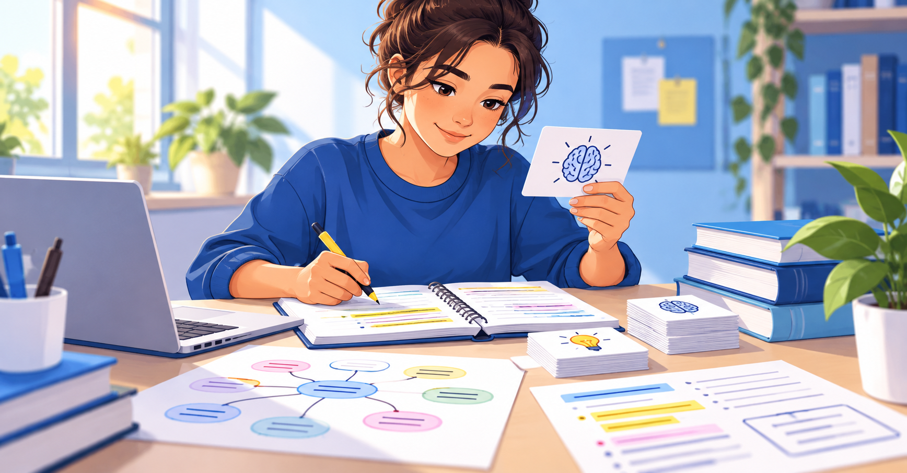

Como estudar melhor sem aumentar o tempo de estudo
Conheça técnicas simples para revisar conteúdos, organizar sessões de estudo e aproveitar melhor o tempo disponível.
Conteúdos para apoiar sua aprendizagem, organização e preparação acadêmica.
Artigos educativos para apoiar estudantes dentro e fora da sala de aula.
Conheça técnicas simples para revisar conteúdos, organizar sessões de estudo e aproveitar melhor o tempo disponível.
Veja estratégias para reduzir distrações, preparar o ambiente e manter o foco por períodos de estudo mais produtivos.
Aprenda a distribuir tarefas ao longo da semana sem deixar atividades importantes acumularem.
Descubra como revisar conteúdos, resolver exercícios e organizar os últimos dias antes de uma avaliação.
Crie um planejamento semanal que considere suas matérias, prioridades, pausas e tempo disponível.
Entenda por que adaptar estratégias e recursos pode tornar o processo de aprendizagem mais inclusivo e acolhedor.
Veja como o ensino voluntário pode apoiar estudantes e fortalecer uma comunidade de aprendizagem colaborativa.

Métodos de AprendizagemConheça diferentes formas de estudar e escolha estratégias adequadas ao conteúdo e ao seu perfil de aprendizagem.
Monte uma preparação equilibrada com teoria, exercícios, simulados, redação e acompanhamento do próprio progresso.
Veja dicas práticas para organizar materiais, acompanhar tarefas, pedir ajuda e desenvolver mais autonomia nos estudos.
Espaço para novos artigos sobre educação, tecnologia, desenvolvimento acadêmico e outros assuntos importantes para estudantes.
O Blog poderá receber outros temas relevantes e os botões "Leia mais" poderão direcionar para conteúdos externos com acesso público.